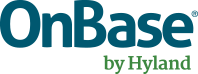
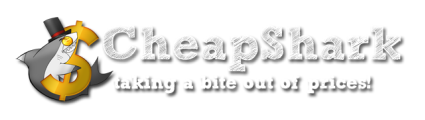
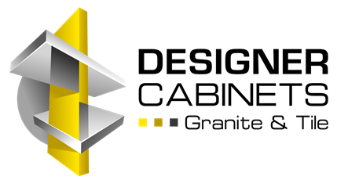
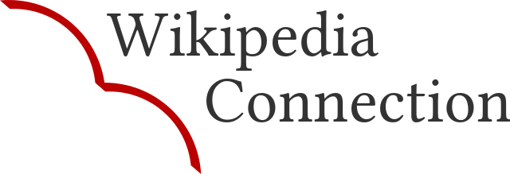
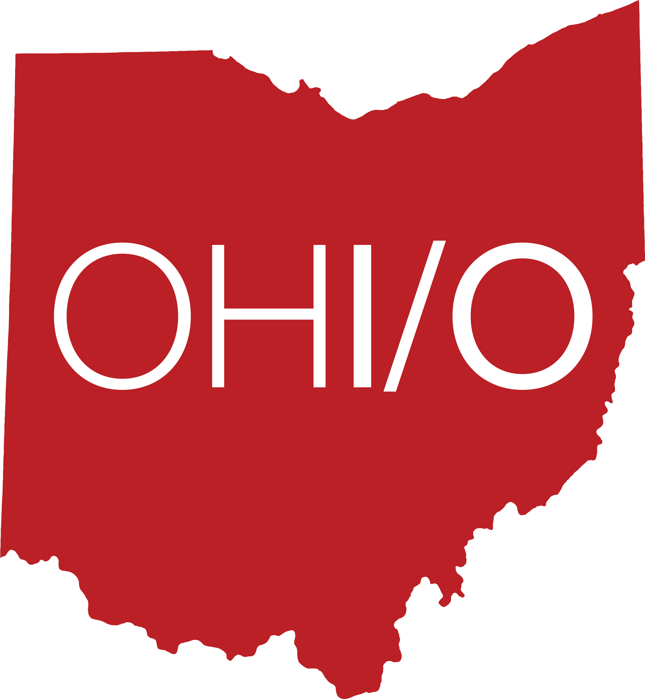
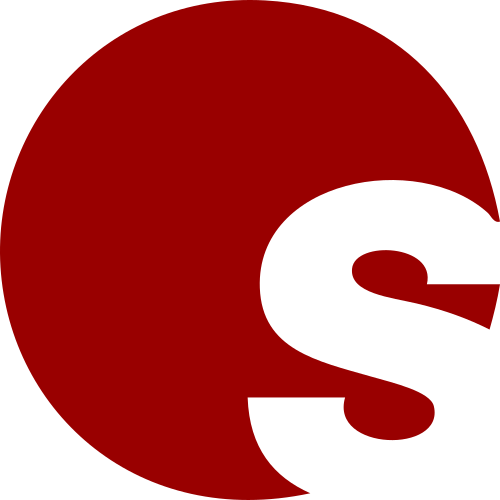

About Me
Hi - I'm Kevin, born and raised in Northeast Ohio.
I'm currently a fourth-year undergraduate at the Ohio State University studying Computer Science and Engineering.
I love working with tech and in community outreach. Most recently in the tech world, I've been involved and interested in web development and data visualization.
Along with software and web development, I'm a fan of free software and freely licensed media. I've been an avid Wikipedia editor for about 8 years, and have since branched out to contribute to a variety of other wikis and free information projects.
Development
Web Design
Free Content
Wikis
Event Planning
Photography
At school, I'm one of the organizers for OHI/O, a student organization at Ohio State dedicated to fostering a tech culture at the University through hackathons, presentations, networking events, and more.
I also founded and lead Wikipedia Connection, a student education focused on exposing students and faculty to Wikipedia with weekly workshops, edit-a-thons, photography events, and more.
In my free time, I like to photograph things - especially the outdoors, infrastructure, and planes. Most of the images I share are freely licensed at Wikipedia's sister project, the
Wikimedia Commons.
Current Positions
For record's sake, here's a list of the projects and organizations I'm currently most actively involved in. Feel free to reach out to me regarding anything related to the below.
Experience
See my
Portfolio for a detailed list of my individual projects.
Work Experience

Intern, Healthcare Services Group
May 2015 - Present
Hyland Software is the creator of OnBase, an ECM and process management suite.
More →

Community Manager
September 2013 - Present
CheapShark is an online price tracker of PC games. Being a part of the community management team means posting the best deals, providing support, and holding community events.
More →
Intern, Web Dev & Community Manager
July 2014 - December 2014
Taazaa is a full-stack software developer, developing websites and apps for various clients. For a second summer, I worked with Taazaa on revamping their website.
More →

Community Manager & Web
Summer 2014 - Summer 2015
DCGT provides quality cabinets, granite, and tile. I came in as a summer intern to create and maintain DCGT's social media, along with some web improvements.
More →
Intern, Mobile Application Development
Summer 2013
Taazaa is a full-stack software developer, developing websites and apps for various clients. As an intern I did mobile app testing and feedback.
More →
Extracurriculars

President
March 2015 - Present
Wikipedia Connection is a student organization I founded at Ohio State.
We work towards connecting students and faculty to Wikipedia through workshops, edit-a-thons, and more.
More →

Web Lead, Branding Lead, & Sponsor Coordinator
March 2015 - Present
OHI/O is a student organization at Ohio State, dedicated to fostering a tech culture.
As an organizer I help put on Ohio's biggest hackathon, contributing to web development, branding, and company relations.
More →

Participant
August 2014 - May 2015
Open Source Club is a student organization at Ohio State that brings together people enthusiastic about free, open source software; I regularly attended for a year and held my own presentation.
In February 2015, I
presented on MediaWiki, the open source software that powers Wikipedia and thousands of other wikis.
More →
.jpg)


.JPG)